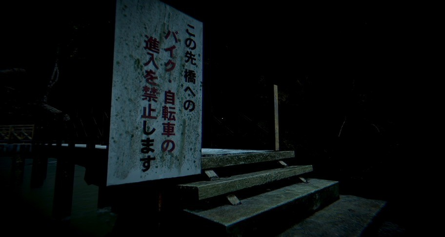

Contents
Chilla's Art Games: A Journey into Retro Japanese Horror
In the gaming world, Chilla's Art stands as a small indie studio known for weaving nightmarish tales. Their games, with low-poly graphics and haunting soundscapes, beckon players to explore a realm where shadows dance and nightmares come to life.

(Left) Chilla's Art: Hanako
, (Right) Chilla's Art: Missing ChildrenOne of their creations, "The Convenience Store," immersesplayers in the depths of a late-night store, where darkness lurks around every corner. Meanwhile, "Parasocial Story" delves into the unsettling world of a V-Tuber whose privacy is systematically dismantled by an unseen malevolence.
Chilla's Art: The Convenience Store
What about Chilla's Art Games
Chilla's Art games draw players into an abyss of terror, where each pixel and soundbite immerses them in an assault on the senses. The low-poly graphics and haunting sound design create an eerie atmosphere. The choices within these games allow players to navigate fear and question the underlying themes. Once you enter, there is no escape from the ever-encroaching darkness.
Chilla's Art: The Bathhouse
"Black Mirror”, Being A Speculative Abyss of Dread
"Black Mirror," a British anthology series, peers into the abyss of near-future dystopias and the consequences of our unrelenting fascination with progress. This series boasts standalone episodes, each a portal into different genres, from crime fiction and horror to romance and comedy.
At its heart lies "Bandersnatch," an interactive episode that beckons viewers to choose their own fate. Here, reality and illusion blur, and choices possess the power to shape destinies.
Source: IMBD
"Black Mirror" serves as a sinister mirror reflecting the darker facets of humanity's obsession with technology. With each episode, it peels back the layers of society's façade, revealing a nightmarish world where shadows and echoes are inescapable. The interactive experience within "Bandersnatch" is a labyrinthine descent into chaos, where choices are akin to opening Pandora's box. This series haunts your thoughts long after the screen goes dark.
(Left) Black Mirror: The National Anthemd
, (Right) Black Mirror: NosediveUnearthing Real-Life Issues in the Shadows
Thriller interactive media serves as a peculiar looking glass, offering distorted but poignant reflections of the very issues that haunt our contemporary world. These narratives are more than mere tales of suspense; they are allegorical mirrors that magnify the shadows lurking on the fringes of our reality. By exaggerating these issues to their most sinister forms, these stories compel us to confront the unsettling truths we often overlook. The raw, unfiltered darkness they present forces us to peel back the layers of complacency and delve into the heart of societal dilemmas. These narratives challenge us to ponder the consequences of unchecked technological advancement, the erosion of privacy, the fragility of our sanity, and the relentless pursuit of progress, and to grapple with the ethical implications of our actions. In doing so, thriller interactive media not only entertain but also serve as a grim reminder of the very real and pervasive issues that we must collectively address.
Black Mirror: Nosedive
Do Thriller Interactive Media Unleash the Inner Demons?
Source: Freepik
As we immerse ourselves in the narratives of thriller interactive media, we navigate treacherous landscapes where fear and unease hold dominion. The question arises: do these stories, with their ability to trigger a deep sense of disquiet, awaken the dormant demons within our souls? The answer, much like the narratives themselves, remains shrouded in ambiguity. While these tales may cast a spell that unnerves and discomforts, they do not inherently summon malevolence or darkness. Rather, they beckon forth the inherent curiosity and courage within us. They challenge us to confront our deepest fears, to scrutinise our own actions and beliefs, and to venture into the enigmatic abyss that is the unknown. In this sense, they are a call to self-reflection, an invitation to embrace the mysterious and wrestle with the shadows within us. They provide a platform for us to navigate the fears we have long ignored and to emerge from the experience with a greater understanding of the complexities of the human psyche. In essence, they are not instigators of darkness, but torchbearers guiding us through the labyrinth of our own fears.
The Lesson To Be Aware Of
The core takeaway from the realm of thriller interactive media is a profound reminder of the potential for storytelling and immersive experiences to stimulate introspection, empathy, and critical thinking. These narratives encourage us to grapple with our deepest fears, ethical dilemmas, and the more shadowy facets of our society.
On a broader scale, these media urge us to continually question, scrutinise, and reflect on the world that surrounds us. They emphasise the need to comprehend the consequences of our actions, particularly within the context of rapid technological advancements and societal shifts. They underscore the essential roles that empathy and ethical decision-making play in an ever-evolving and intricate world.
Source: Quora
References
- Black Mirror - Rotten Tomatoes
- Black Mirror Explained
- Watch Black Mirror | Netflix Official Site
- Chilla's Art (Creator) - TV Tropes
- (26) Parasocial - Chilla’s Art (FULL GAME) - YouTube
- (26) is he following me?... - YouTube
- Chilla's Art Explained (Playlist)
- The Psychological Thriller: Mess with Your Readers' Minds | Skillshare Blog